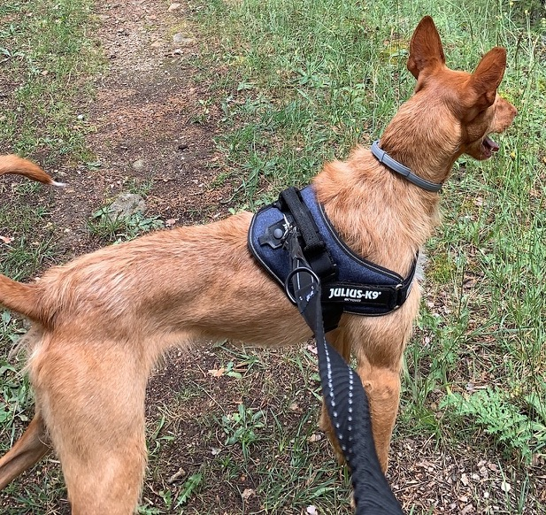
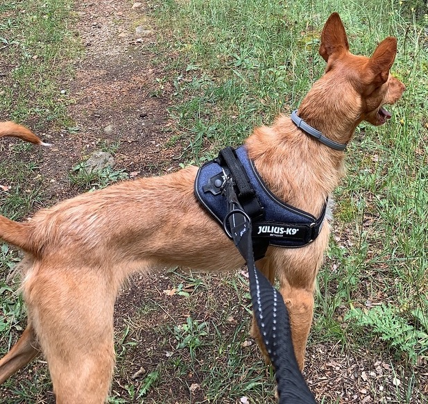

RECOMPENSA €300
Perro perdido el Viernes 3 de Diciembre 2021 a las 12:00. Se escapó de su hogar en Camino Fuente del Cura al Monte Aguirre, Miraflores de la Sierra.
Se llama Pino. Es un Podenco Andaluz (mezcla), castrado, de unos 19kg, pelo duro y corto de color beige (marrón claro), ojos claros de color verdoso, y la trufa rosa. Complexión delgada pero musculosa. Collar nylon beige con clip de metal. Puede ser tímido y alejarse de desconocidos.
La primera pista que nos lleve a Pino se recompensará con €300, enviado por Bizum o Transferencia bancaria.
Contactar Sam:
tel/whatsapp: 644 477 644
email: me@samlown.com.